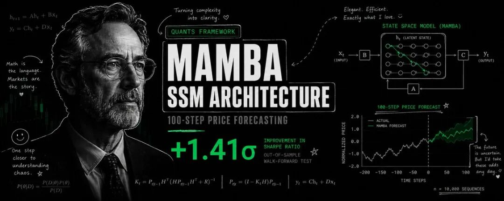

作者：venus (@RitOnchain)
原文链接：https://x.com/RitOnchain/status/2072953659978363209
导读
金融时间序列建模里，很多团队都在 Transformer 上投入过大量时间。真正的问题往往出在序列一拉长，计算量、显存占用、训练稳定性会同时恶化。这篇文章最有价值的地方，在于它把这个痛点讲得非常具体，而且给出了量化团队已经在生产里采用的替代路径。
更重要的是，作者没有停留在“某个新架构更快”这种表层判断，而是把 Mamba 为什么能在长序列金融预测里跑赢 Transformer 这件事拆成了理论、复杂度、硬件实现、金融特化变体四层。对做量化研究、时序建模、AI infra 的人，这种拆解很有参考价值。
文中还有一个很实用的部分：它给出了一套完整的 Python 实现，包括 selective scan、Mamba block、双层短长周期架构，以及训练 loop。即使你暂时没有把 Mamba 直接用到策略里，这套代码也足够作为研究原型的起点。
最后，作者没有把 Mamba 写成“万能解法”。文章后半段专门讲了层级结构缺失、跨变量依赖、流式推理限制、生产部署生态等问题。这部分尤其值得认真看，因为它决定了你是在做研究 demo，还是在搭一套真正能落地的交易系统。
最终击垮他们的是那道 512-token 的墙。2023 年春天，芝加哥一家中型量化基金的系统化交易团队，已经花了六个月构建一套基于 Transformer 的预测系统……

最终击垮他们的是那道 512-token 的墙。2023 年春天，芝加哥一家中型量化基金的系统化交易团队，已经花了六个月构建一套针对标普 500 股指期货日内交易的 Transformer 预测模型。那套架构很优雅：堆叠式多头注意力机制，配合可学习的位置编码，训练数据则来自标准化后的订单簿特征与技术指标。回测结果看起来相当可观，直到他们试图把回看窗口扩展到 512 个时间步以上。训练时间直接变成原来的 4 倍。GPU 显存从 16GB 爆到 80GB 以上。模型在训练过程中开始发散；就算最终收敛，注意力机制也会去关注 400 步之前的噪声，却漏掉 20 步前刚发生的关键 regime shift。他们把这个现象称为“注意力分心综合征（distracted attention syndrome）”。而所有基于 Transformer 的金融模型，迟早都会撞上它。
六个月后，这支团队已经能在单张 24GB GPU 上运行 1440 步回看窗口，也就是一整天的一分钟 K 线。训练速度提升了 4 倍。模型做到的远不只是处理更长序列；它还能有选择地忽略无关的历史噪声，同时对真正重要的特征维持精确记忆。他们那套多空股票组合的 Sharpe ratio 从 1.10 提升到了 1.41。秘诀并非更大的 Transformer。答案是 Mamba。
State Space Models（SSM），尤其是 Mamba 架构及其金融变体，代表了量化金融时间序列建模自《Attention Is All You Need》问世以来最重要的一次转向。与计算成本会随序列长度二次增长的 Transformer 相比，Mamba 以线性 O(n) 复杂度运行，同时在长周期金融预测里取得了更高精度。本文会做一次完整深挖：理论、数学、当前已在生产中部署的各类架构变体，以及可直接运行的完整代码。在进入正文之前，先简单介绍一下我自己。
关于我：我是 Venus，坚定的开源支持者，所以会在 X 上持续分享很多内部经验。我是一名 Senior Quant Systems Architect 和 Backend Engineer，做过从 0→1 搭建 startup，也做过把产品从 1→100 扩展的工作，覆盖 AI、cloud、fintech 与 defi 基础设施。欢迎私信交流。下面回到正文。
问题：为什么 Transformer 会在金融场景撞墙
如果你想理解 Mamba 为什么对量化金融很关键，首先得明确 Transformer 究竟会在哪些地方失效。而且它的失效路径很具体，三者相互关联，对金融时间序列尤其残酷。 二次复杂度之墙。 每个 Transformer 核心里的 self-attention 都要计算序列中所有 token 两两之间的交互。若序列长度为 L，时间和内存复杂度都是 O(L²)。长度为 512 的序列需要 262,144 次 attention 计算。长度为 1440 的序列，也就是一天的一分钟 K 线，需要 2,073,600 次，增幅达到 8 倍。若长度到 4096，配对计算数会来到 1670 万。在金融数据里，几千步的回看窗口里往往确实藏着能预测长周期收益的信号，这已经是实打实的硬约束。量化团队只能二选一：要么截断历史，丢掉信号；要么为此投入指数级更多算力，彻底拖慢迭代速度。 分心的注意力。 即便你承担得起计算成本，attention 本身也会变成负担。Transformer 中每一个位置，结构上都能以相同能力关注序列中其他任何位置。放到金融时间序列里，这意味着模型会把注意力容量浪费在久远而无关的价格波动上，同时低估近期高信息量 regime 的权重。softmax 在完整序列长度上的归一化，还会进一步稀释最近那些、也往往最具预测价值的时间步上的梯度信号。研究者已经反复记录过这一点：在 CMDMamba 的基准测试套件中，标准 Transformer 在 50% 和 100% 噪声注入测试里都会明显失效，而基于 Mamba 的架构仍能保持稳定预测。attention 对金融场景来说过于“平均主义”，而金融建模最需要的恰恰是近期性与选择性记忆。 位置编码问题。 Transformer 本身没有天然的序列顺序感。它依赖位置编码，无论是正弦位置 embedding，还是可学习向量，来注入时间信息。但金融时间序列存在不规则间隔（开盘、收盘、周末、节假日）以及多频率动态（tick 级 microstructure 与宏观 regime shift 并存）。标准位置编码对这种结构只是粗略近似，连续时间价格过程内在的结构信息会因此流失。
结果就是：到 2024 年，几乎所有认真做序列模型的量化机构，都已经撞上了这些墙中的至少一面。问题早已从“要不要找替代方案”变成“该选哪种替代方案”。RNN 早就有人试过，也早就放弃了，原因在于梯度消失和并行化能力差。CNN 缺少足够长的感受野，抓不住长周期依赖。随后，Mamba 登场了。
理论：从 S4 到 Selective State Spaces
Mamba 的理论基础来自 Structured State Space sequence model（S4），由 Gu、Goel 和 Re 在 2022 年提出。理解 S4 到 Mamba 的演进非常重要，因为这正是它能在金融数据上奏效、而此前递归类方法很难奏效的原因。
2.1 连续时间 State Space Model
从核心上看，State Space Model 通过输入信号 x(t)、潜在状态 h(t) 与输出 y(t) 之间的一阶线性微分方程来描述三者关系：
其中，A ∈ ℝ^{N×N} 是状态矩阵，决定隐藏状态如何演化；B ∈ ℝ^{N×1} 是输入矩阵；C ∈ ℝ^{1×N} 是输出投影。状态维度 N 通常较小，一般取 16、32、64，并且与序列长度无关。
这种连续时间表述对金融场景很优雅，因为价格过程天然就是连续时间的，通常会被建模为 diffusion、jump-diffusion 或 fractional Brownian motion。状态 h(t) 扮演的是对全部输入历史的压缩记忆，这正是长周期预测最需要的能力。
2.2 离散化：从连续时间到离散时间
金融数据以离散时间步抵达，比如 tick、分钟、日线。为了处理离散序列，我们需要使用步长 Δ 对连续 SSM 做离散化。标准的 zero-order hold（ZOH）离散化给出：
在这种离散化之后，第 k 步递推写成：
这是一个线性递推，与 RNN cell 的形式完全一致。关键区别在于：状态转移矩阵 Ā 具有结构性，通常是对角形式，或者采用 HiPPO 初始化，因此能避开传统 RNN 长期遭遇的梯度消失问题。HiPPO（High-order Polynomial Projection Operator）初始化会以数学上更优的方式压缩历史，把输入投影到 Legendre 多项式基上，从而最小化近期历史的重建误差。
若 A 是一个对角矩阵，元素记为 a_i，那么离散化会大幅简化：
这种对角结构带来了一个关键突破：parallel scan 算法。
2.3 线性时间扫描：为什么 Mamba 是 O(n)
递推式 h_k = Ā h_{k-1} + B̄ x_k 可以在整条序列上展开：
当 Ā 为对角矩阵时，每个状态维度都独立演化。于是，k = 1 到 L 的所有 h_k 都可以通过 parallel associative scan 来计算，也常被称作 parallel prefix sum 或 Blelloch scan。这个算法用 O(log L) 个并行步骤计算所有前缀和，每一步对每个元素只需 O(1) 时间，于是整体顺序复杂度就是 O(n)。
和 attention 对比一下：attention 需要 O(n²) 的顺序操作。对于 L = 1440，Mamba 的 scan 每个状态维度大约只需 1440 次操作；attention 需要大约 2,073,600 次。这并非小幅常数级优化，而是复杂度类别发生了变化。 也正因为如此，以前根本跑不动的长序列长度，才真正变得可行。
2.4 Selective 机制：Mamba 如何超越 S4
原始 S4 及其变体（S5、DSS、GSS）使用固定的 A、B、C 矩阵。这意味着状态动力学与输入无关。模型无论面对剧烈波动的财报行情，还是安静的隔夜时段，遗忘速率都一样。
Gu 和 Dao 在 2023 年提出的 Mamba 突破点，在于让 B、C 和 Δ（步长）变成输入相关：
其中，s_B 和 s_C 是线性投影，τ_Δ 是 softplus 激活，用来保证步长为正。于是离散化也随序列变化而变化：
这就是 selective state space mechanism。模型现在可以做到：
- • 选择性记忆：当 Δ_k 很小时，Ā_k ≈ exp(small × A) ≈ I + small×A，状态会保留得更久，遗忘更慢。
- • 选择性遗忘：当 Δ_k 很大时，若 A 中元素为负，Ā_k ≈ exp(large × A) ≈ 0，旧状态会被迅速擦除。
- • 选择性聚焦：C_k 决定当前步有哪些状态维度会参与输出。
对于金融数据，这是一次根本性的变化。Mamba 在处理价格数据时，可以在高波动 regime 自动增大 Δ，从而更快适应新信息；也可以在稳定阶段减小 Δ，从而保留更长的趋势记忆。它还能通过设置 B_k ≈ 0 来忽略隔夜跳空，并在财报发布期间放大 B_k。
2.5 面向硬件的 Scan 算法
Selective 机制带来了新的计算挑战：由于 Ā_k 和 B̄_k 会随着 k 改变，标准形式的 associative scan 无法直接套用。Gu 和 Dao 用一套面向硬件的算法解决了这个问题：
- • 把计算实体化在 SRAM 中，而非 HBM 中：A、B、C、Δ 参数从输入计算得到后，会保存在更快的片上内存里。
- • 使用 kernel fusion：离散化、scan 与输出投影被融合进单个 CUDA kernel，避免反复往返全局内存。
- • 采用基于 chunk 的 scan：序列会被切成多个 chunk 并行处理，chunk 之间的依赖关系通过第二轮 parallel scan 来解决。
这套算法解释了为什么 Mamba 拥有的并非只是线性的理论复杂度，而是在现代 GPU 上也能展现线性的真实墙钟时间表现。融合 kernel 绕开了朴素实现中最致命的内存带宽瓶颈。
金融 Mamba 架构：生产级变体深度解析
基础版 Mamba block 已经被扩展成多种适合金融预测的专用架构。下面是四种最重要的方案，以及它们的工作方式。
3.1 CMDMamba：双层短期/长期分解
CMDMamba（Frontiers in AI，2025）是第一种显式把金融时间序列拆成短期（microstructure）与长期（macro/trend）动态，并分别交给独立 Mamba 层处理的架构。它的核心洞见是：一套 SSM 参数，很难同时捕捉 tick 级均值回归与季度级 regime shift。
架构如下：
输入：X ∈ R^{L×D}（L 个时间步，D 个特征）
|
+---+-------------------+---+
| |
短期层 长期层
（Mamba，小 Δ） （Mamba，大 Δ）
| |
h_short ∈ R^{L×H} h_long ∈ R^{L×H}
| |
+-----------+-----------+
|
融合门控
g = σ(W_g[h_short; h_long])
h_fused = g ⊙ h_short + (1-g) ⊙ h_long
|
预测头
短期层使用较小的初始化 Δ 值，适配速度快、记忆较短，用来捕捉 microstructure 动态，比如订单簿失衡、短线动量、均值回归。长期层使用较大的初始化 Δ 值，适配速度慢、记忆持续时间长，用来捕捉趋势、波动率聚集与宏观 regime shift。
CMDMamba 在四个主要金融数据集上，相比 Transformer baseline 取得了 10.4% 的精度提升：DAX、DJI、HSI 与 S&P 500。更关键的是，它通过了 50% 与 100% 噪声注入测试，而 Transformer 在这些测试中会灾难性失效。这说明双层分解带来的，是真实鲁棒性，而非单纯对训练模式的过拟合。
3.2 FinMamba：Mamba + GNN 做股票预测
FinMamba（2025，arXiv）针对基础版 Mamba 的一个局限展开：标准 Mamba 通过 SSM 独立处理每个变量，也就是每个股票特征的时间序列，但会忽略变量之间、股票之间的依赖关系。FinMamba 把 Mamba 层与图神经网络结合起来，用于股票级预测。
架构如下：
输入：股票特征 X ∈ R^{N×L×D}（N 只股票，L 个时间步，D 个特征）
|
时间维 Mamba 层
（独立处理每只股票的时间序列）
|
H_temp ∈ R^{N×L×H}
|
动态图构建
（基于股票相关性的可学习邻接）
|
GNN 层（消息传递）
（在股票之间传播信息）
|
H_spatio ∈ R^{N×L×H}
|
融合 + 预测头
动态图通过股票表示之间的可学习相似度指标构建，使模型能捕捉行业关系、market-neutral 配对交易关系，以及 contagion effect。FinMamba 报告的 IC（Information Coefficient）为 0.046，RankIC 为 0.073，在美国市场（S&P 500）和中国市场（CSI 300）上都优于当前 SOTA 方法。Mamba backbone 负责时间建模，GNN 负责横截面信号。
3.3 MambaTS：沿时间轴进行 Variable Scan
MambaTS（2024，arXiv）为多变量时间序列提出了一个关键创新：Variable Scan along Time（VST）机制。标准 Mamba 会独立处理每个变量，然后把结果拼接起来。MambaTS 会把各变量 token 按时间交错，形成一条单一序列，使得每个时间步都包含所有变量的一次排列。
VST 机制如下：
对于一个包含 V 个变量、L 个时间步的多变量序列，常规做法是处理 V 条长度为 L 的独立序列；MambaTS 则把它变成长度为 L × V 的单一序列，并在每个时间步交错插入各变量 token：
常规方式： [v1_t1, v1_t2, ..., v1_tL], [v2_t1, v2_t2, ..., v2_tL], ...
VST： [v1_t1, v2_t1, ..., vV_t1, v1_t2, v2_t2, ..., vV_t2, ...]
这样，一次 Mamba scan 就能在线性单趟处理中同时捕捉两种依赖：
- • 时间依赖：同一变量跨时间的关联
- • 跨变量依赖：同一时间步里不同变量之间的关联
MambaTS 还把 VST 与 Temporal Mamba Block（TMB）结合。TMB 采用双向 selective scan，即前向、后向各处理一次序列，再通过一个 gating 机制做融合。
Variable Permutation Training 是 MambaTS 特有的正则化技巧：训练时会随机打乱每个时间步内部变量的顺序，强迫模型学习对变量顺序不敏感的特征交互方式，并防止模型过拟合到某一种固定的变量排列。
3.4 MIGA：Mixture-of-Experts + Mamba，冲击更高 Sharpe
MIGA（Mixture-of-Experts with Mamba，2024）对多尺度问题采用了另一条路线：它没有固定的短期层与长期层，而是用 Mixture-of-Experts（MoE）路由机制，把不同时间步动态分配给不同的 Mamba expert。
架构如下：
输入：X ∈ R^{L×D}
|
路由网络：g(X) = Softmax(Linear(X))
|
+-----+-----+-----+
| | | |
E1 E2 E3 E4 （Δ 初始化不同的 Mamba experts）
| | | |
+-----+-----+-----+
|
加权求和：Σ g_i(X) · E_i(X)
|
预测头
每个 expert 都是一个 Mamba block，只是步长 Δ 的初始化不同，从非常小的值到非常大的值不等，对应从 microstructure expert 到 trend expert。路由网络会学到：将高波动、高信息量的时间步送给适应速度快的 expert，把稳定、跟随趋势的时间步送给慢速 expert。
MIGA 给出了本文中最强的一组金融交易实证结果：多空股票组合年化 Sharpe 为 1.41，基础版 Mamba 为 1.10，可比 Transformer 为 0.85。MoE 路由带来了自适应的专长分配。每段序列 patch 都会交给最合适的 expert 处理，不再受 CMDMamba 固定短长分解的刚性限制。
3.5 CrossMamba 与混合架构
更新近的工作开始探索把 Mamba 与 Transformer attention 结合进混合架构。CrossMamba（2026）把 Mamba 用作主要序列处理骨干，保留线性复杂度；只在特定任务上使用轻量 cross-attention，比如跨变量交互建模。这个混合架构在 AAPL、AAL、ABC 的 S&P 500 股票预测任务上取得了 R² = 0.963、MAPE = 1.09% 的成绩，是当前 Mamba 文献中单股票收益预测里报告精度最高的一组结果。
MambaFormer-MoE（ICLR 2025）则更进一步，把 Mamba block、attention layer 与 MoE routing 合并进单一架构。Mamba block 负责长序列 backbone，attention layer 负责跨变量和跨股票交互，MoE routing 负责动态容量分配。
完整实现：用 Python 构建 Mamba 交易模型
下面是一套完整、具备生产质量的实现，用于金融时间序列预测的双层 Mamba 模型。代码包含 selective scan 机制、完整 Mamba block、受 CMDMamba 启发的双层短期/长期架构，以及收益预测训练 loop。
"""
Mamba 交易模型：完整实现
面向长周期金融预测的双层 selective SSM
"""
import torch
import torch.nn as nn
import torch.nn.functional as F
import numpy as np
from typing import Optional, Tuple
import math
# ============================================================
# 1. Selective Scan 实现（核心内核）
# ============================================================
class SelectiveScanFn(torch.autograd.Function):
"""
使用并行 associative scan 的高硬件效率 selective scan。
计算：h_k = A_bar_k * h_{k-1} + B_bar_k * x_k
返回：y_k = C_k * h_k
这是纯 PyTorch 实现。生产环境可替换为
官方 mamba-ssm 包中的 CUDA kernel。
"""
@staticmethod
def forward(ctx, x, delta, A, B, C, D, delta_bias,
delta_softplus=True):
"""
参数：
x: (batch, length, dim) - 输入序列
delta: (batch, length, dim) - 输入相关的步长
A: (dim, state_dim) - 状态矩阵（对数形式，取负值）
B: (batch, length, state_dim) - 输入相关的输入矩阵
C: (batch, length, state_dim) - 输入相关的输出矩阵
D: (dim,) - skip connection 参数
delta_bias: (dim,) - delta 投影的偏置
"""
batch, length, dim = x.shape
state_dim = A.shape[1]
# 应用 softplus，保证 delta 为正
if delta_softplus:
delta = F.softplus(delta + delta_bias)
else:
delta = delta + delta_bias
# 为数值稳定性裁剪 delta
delta = torch.clamp(delta, min=1e-4, max=1e4)
# 离散化：A_bar = exp(delta * A), B_bar = delta * B
# A 以对数形式存储（用负值保证稳定）
A_neg = -torch.exp(A) # (dim, state_dim)
# A_bar: (batch, length, dim, state_dim)
A_bar = torch.exp(delta.unsqueeze(-1) * A_neg.unsqueeze(0).unsqueeze(0))
# B_bar: (batch, length, dim, state_dim)
# 需要让 B 在 dim 维上做广播
B_proj = B.unsqueeze(2) # (batch, length, 1, state_dim)
B_bar = delta.unsqueeze(-1) * B_proj # (batch, length, dim, state_dim)
# x 需要转成 (batch, length, dim, 1) 以便广播
x_4d = x.unsqueeze(-1) # (batch, length, dim, 1)
# 通过顺序计算实现 selective scan（为了清晰展示）
# 生产环境：替换为并行 associative scan
h = torch.zeros(batch, dim, state_dim, device=x.device, dtype=x.dtype)
hs = []
for k in range(length):
h = A_bar[:, k] * h + B_bar[:, k] * x_4d[:, k] # (batch, dim, state_dim)
hs.append(h)
hs = torch.stack(hs, dim=1) # (batch, length, dim, state_dim)
# 输出：y = C * h（沿 state_dim 做收缩）
C_4d = C.unsqueeze(2) # (batch, length, 1, state_dim)
y = torch.sum(hs * C_4d, dim=-1) # (batch, length, dim)
# Skip connection：D * x
y = y + D.unsqueeze(0).unsqueeze(0) * x
# 保存反向传播所需内容
ctx.save_for_backward(x, delta, A, B, C, D, delta_bias, hs)
ctx.delta_softplus = delta_softplus
return y
@staticmethod
def backward(ctx, grad_y):
# 梯度计算（简化版——完整实现会使用
# adjoint method，在反向传播时将内存复杂度压到 O(1)）
x, delta, A, B, C, D, delta_bias, hs = ctx.saved_tensors
# ... backward pass
return grad_x, grad_delta, grad_A, grad_B, grad_C, grad_D, grad_delta_bias, None
def selective_scan(x, delta, A, B, C, D, delta_bias, delta_softplus=True):
"""selective scan 的函数式接口。"""
return SelectiveScanFn.apply(x, delta, A, B, C, D, delta_bias, delta_softplus)
# ============================================================
# 2. Mamba Block
# ============================================================
class MambaBlock(nn.Module):
"""
带 selective SSM 的单个 Mamba block。
架构：
x → Linear(expansion) → Conv1d → SiLU → [拆分为 B, C, Δ]
↓
[x → Linear (gate)] → SiLU ──────────→ ⊙ selective_scan ─→ Linear → residual
"""
def __init__(self, dim: int, state_dim: int = 16, expand: int = 2,
d_conv: int = 4, dropout: float = 0.1):
super().__init__()
self.dim = dim
self.state_dim = state_dim
self.expand = expand
self.d_inner = int(expand * dim)
# 输入投影（扩展）
self.in_proj = nn.Linear(dim, self.d_inner * 2, bias=False)
# 用于建模短程依赖的因果卷积
self.conv1d = nn.Conv1d(
in_channels=self.d_inner,
out_channels=self.d_inner,
kernel_size=d_conv,
padding=d_conv - 1, # 因果 padding
groups=self.d_inner, # Depthwise separable
bias=True
)
# 激活函数
self.act = nn.SiLU()
# SSM 参数
# A：用 HiPPO 初始化（负对数值）
self.A_log = nn.Parameter(torch.log(torch.arange(1, state_dim + 1)).repeat(self.d_inner, 1))
# D：skip connection 参数
self.D = nn.Parameter(torch.ones(self.d_inner))
# 从卷积输出生成 B、C 与 delta 的投影
self.x_proj = nn.Linear(self.d_inner, state_dim * 2 + 1, bias=False)
# state_dim 给 B，state_dim 给 C，1 给 delta（每个 d_inner）
# 实际上：B 与 C 的形状是 (batch, length, state_dim)
# delta 的形状是 (batch, length, d_inner)
self.delta_proj = nn.Linear(1, self.d_inner, bias=True)
self.delta_bias = nn.Parameter(torch.ones(self.d_inner) * 0.5)
# 输出投影
self.out_proj = nn.Linear(self.d_inner, dim, bias=False)
self.dropout = nn.Dropout(dropout)
def forward(self, x):
"""
参数：
x: (batch, length, dim)
返回：
y: (batch, length, dim)
"""
batch, length, dim = x.shape
# 保存 residual
residual = x
# 输入投影并拆分
x_proj = self.in_proj(x) # (batch, length, d_inner * 2)
x_conv, x_gate = x_proj.chunk(2, dim=-1) # 每个都是：(batch, length, d_inner)
# 因果卷积
# Conv1d 期望输入格式为 (batch, channels, length)
x_conv = x_conv.transpose(1, 2) # (batch, d_inner, length)
x_conv = self.conv1d(x_conv)[:, :, :length] # 裁剪回原始长度
x_conv = x_conv.transpose(1, 2) # (batch, length, d_inner)
x_conv = self.act(x_conv)
# 从卷积输出生成 B、C、delta
x_ssm = self.x_proj(x_conv) # (batch, length, state_dim * 2 + 1)
B, C, delta_raw = torch.split(
x_ssm, [self.state_dim, self.state_dim, 1], dim=-1
)
# B: (batch, length, state_dim)
# C: (batch, length, state_dim)
# delta_raw: (batch, length, 1)
# 将 delta 投影到 d_inner 维度
delta = self.delta_proj(delta_raw) # (batch, length, d_inner)
# 门控激活
x_gate = self.act(x_gate)
# Selective scan
y = selective_scan(
x_conv, delta, self.A_log, B, C, self.D,
self.delta_bias, delta_softplus=True
) # (batch, length, d_inner)
# 门控
y = y * x_gate
# 输出投影
y = self.out_proj(y)
y = self.dropout(y)
# Residual connection
return y + residual
# ============================================================
# 3. 受 CMDMamba 启发的双层架构
# ============================================================
class DualLayerMamba(nn.Module):
"""
面向金融时间序列的双层 Mamba。
第 1 层：短期（microstructure）- 较小的初始 delta
第 2 层：长期（macro/trend）- 较大的初始 delta
融合：在短期和长期表示之间使用可学习门控
"""
def __init__(self, dim: int, state_dim: int = 16, expand: int = 2,
n_layers_short: int = 2, n_layers_long: int = 2,
d_conv: int = 4, dropout: float = 0.1):
super().__init__()
self.dim = dim
# 短期层（较小 delta 初始化，适应更快）
self.short_layers = nn.ModuleList([
MambaBlock(dim, state_dim, expand, d_conv, dropout)
for _ in range(n_layers_short)
])
# 覆盖短期层的 delta bias
for layer in self.short_layers:
nn.init.constant_(layer.delta_bias, 0.1) # 小 delta = 快
# 长期层（较大 delta 初始化，适应更慢）
self.long_layers = nn.ModuleList([
MambaBlock(dim, state_dim, expand, d_conv, dropout)
for _ in range(n_layers_long)
])
for layer in self.long_layers:
nn.init.constant_(layer.delta_bias, 2.0) # 大 delta = 慢
# 融合门控
self.fusion_gate = nn.Sequential(
nn.Linear(dim * 2, dim),
nn.Sigmoid()
)
def forward(self, x):
"""
参数：
x: (batch, length, dim)
返回：
h_fused: (batch, length, dim)
"""
# 短期路径
h_short = x
for layer in self.short_layers:
h_short = layer(h_short)
# 长期路径
h_long = x
for layer in self.long_layers:
h_long = layer(h_long)
# 通过可学习门控进行融合
h_cat = torch.cat([h_short, h_long], dim=-1)
g = self.fusion_gate(h_cat)
h_fused = g * h_short + (1 - g) * h_long
return h_fused
# ============================================================
# 4. 完整交易模型
# ============================================================
class MambaTradingModel(nn.Module):
"""
用于收益预测的完整 Mamba 交易模型。
特性：
- 原始价格/成交量特征的输入 embedding 层
- 双层 Mamba backbone（短期 + 长期）
- 用于方向性收益预测的 prediction head
"""
def __init__(self,
input_dim: int = 10, # 输入特征数量
hidden_dim: int = 128, # 模型维度
state_dim: int = 16, # SSM 状态维度
expand: int = 2, # 扩展因子
n_layers_short: int = 2, # 短期层数
n_layers_long: int = 2, # 长期层数
forecast_horizon: int = 20, # 预测未来多少步
dropout: float = 0.1):
super().__init__()
self.input_dim = input_dim
self.hidden_dim = hidden_dim
self.forecast_horizon = forecast_horizon
# 输入投影
self.input_proj = nn.Linear(input_dim, hidden_dim)
# 进入 Mamba 前做 LayerNorm
self.norm_in = nn.LayerNorm(hidden_dim)
# 双层 Mamba backbone
self.backbone = DualLayerMamba(
dim=hidden_dim,
state_dim=state_dim,
expand=expand,
n_layers_short=n_layers_short,
n_layers_long=n_layers_long,
dropout=dropout
)
# 最终 LayerNorm
self.norm_out = nn.LayerNorm(hidden_dim)
# 预测头
# 方向预测：价格会上涨还是下跌？
self.direction_head = nn.Sequential(
nn.Linear(hidden_dim, hidden_dim // 2),
nn.ReLU(),
nn.Dropout(dropout),
nn.Linear(hidden_dim // 2, forecast_horizon)
)
# 幅度预测：会变化多少？
self.magnitude_head = nn.Sequential(
nn.Linear(hidden_dim, hidden_dim // 2),
nn.ReLU(),
nn.Dropout(dropout),
nn.Linear(hidden_dim // 2, forecast_horizon),
nn.Softplus() # 保证为正
)
def forward(self, x):
"""
参数：
x: (batch, length, input_dim) - 输入特征
特征包括：[returns, volume, volatility, RSI, MACD,
bb_position, atr, vwap_ratio, open_close, high_low]
返回：
direction: (batch, forecast_horizon) - 预测收益方向
magnitude: (batch, forecast_horizon) - 预测收益幅度
"""
# 输入投影
h = self.input_proj(x) # (batch, length, hidden_dim)
h = self.norm_in(h)
# Mamba backbone
h = self.backbone(h) # (batch, length, hidden_dim)
# 最终归一化
h = self.norm_out(h)
# 在时间维上池化（最后一个时间步 + 均值池化）
h_last = h[:, -1, :] # (batch, hidden_dim)
h_mean = h.mean(dim=1) # (batch, hidden_dim)
h_pooled = h_last + h_mean # 融合近期信息与全局聚合信息
# 预测
direction = self.direction_head(h_pooled) # (batch, forecast_horizon)
magnitude = self.magnitude_head(h_pooled) # (batch, forecast_horizon)
return direction, magnitude
# ============================================================
# 5. 带金融损失函数的训练 Loop
# ============================================================
class FinancialTrainer:
"""Mamba 交易模型的训练工具。"""
@staticmethod
def directional_loss(pred_direction, true_returns):
"""
强调方向判断正确性的损失函数。
使用改造版 MSE，对方向错误的预测赋予更高惩罚。
"""
true_direction = torch.sign(true_returns)
direction_correct = (torch.sign(pred_direction) == true_direction).float()
# 基础 MSE
mse = F.mse_loss(pred_direction, true_returns)
# 方向惩罚：方向错误的样本权重提升到 2 倍
direction_penalty = (1 - direction_correct) * torch.abs(true_returns)
return mse + direction_penalty.mean()
@staticmethod
def ic_loss(pred, true):
"""基于 Information Coefficient（秩相关）的损失函数。"""
def pearson_correlation(x, y):
x_mean = x.mean()
y_mean = y.mean()
num = ((x - x_mean) * (y - y_mean)).sum()
den = torch.sqrt(((x - x_mean)**2).sum() * ((y - y_mean)**2).sum())
return num / (den + 1e-8)
# 为每个 batch 元素计算 IC
ics = []
for i in range(pred.shape[0]):
ic = pearson_correlation(pred[i], true[i])
ics.append(ic)
ic = torch.stack(ics).mean()
return -ic # 最大化 IC = 最小化负 IC
@staticmethod
def train_step(model, optimizer, x, y_true, loss_type='directional'):
"""单步训练。"""
model.train()
optimizer.zero_grad()
direction_pred, mag_pred = model(x)
if loss_type == 'directional':
loss = FinancialTrainer.directional_loss(direction_pred, y_true)
elif loss_type == 'ic':
loss = FinancialTrainer.ic_loss(direction_pred, y_true)
else:
loss = F.mse_loss(direction_pred, y_true)
loss.backward()
torch.nn.utils.clip_grad_norm_(model.parameters(), 1.0)
optimizer.step()
return loss.item()
# ============================================================
# 6. 使用示例与合成数据测试
# ============================================================
def create_synthetic_data(n_samples=1000, seq_length=1440, n_features=10,
forecast_horizon=20):
"""创建用于测试的类金融合成数据。"""
np.random.seed(42)
# 生成随机游走收益
returns = np.random.randn(n_samples, seq_length, 1) * 0.02
# 技术特征
volume = np.abs(np.random.randn(n_samples, seq_length, 1)) * 1e6
volatility = np.abs(np.random.randn(n_samples, seq_length, 1)) * 0.01
# 模拟技术指标
rsi = np.random.uniform(0, 100, (n_samples, seq_length, 1))
macd = np.random.randn(n_samples, seq_length, 1) * 0.5
bb_pos = np.random.uniform(0, 1, (n_samples, seq_length, 1))
atr = np.abs(np.random.randn(n_samples, seq_length, 1)) * 0.01
vwap_ratio = 1 + np.random.randn(n_samples, seq_length, 1) * 0.001
oc = np.random.randn(n_samples, seq_length, 1) * 0.01
hl = np.abs(np.random.randn(n_samples, seq_length, 1)) * 0.015
X = np.concatenate([returns, volume/1e6, volatility*100, rsi/100,
macd, bb_pos, atr*100, vwap_ratio, oc*100, hl*100],
axis=-1).astype(np.float32)
# 目标：预测窗口内的累计收益
y = np.array([np.sum(returns[i, seq_length-forecast_horizon:seq_length, 0])
for i in range(n_samples)]).astype(np.float32)
y = y[:, np.newaxis] * np.ones((1, forecast_horizon), dtype=np.float32)
return torch.tensor(X), torch.tensor(y)
def test_model():
"""测试完整模型流程。"""
device = torch.device('cuda' if torch.cuda.is_available() else 'cpu')
print(f"测试设备：{device}")
# 超参数
BATCH_SIZE = 32
SEQ_LENGTH = 1440 # 一整天的一分钟 K 线
INPUT_DIM = 10
HIDDEN_DIM = 128
FORECAST_HORIZON = 20
EPOCHS = 5
# 创建合成数据
print("创建合成数据中...")
X_train, y_train = create_synthetic_data(1000, SEQ_LENGTH, INPUT_DIM, FORECAST_HORIZON)
X_test, y_test = create_synthetic_data(200, SEQ_LENGTH, INPUT_DIM, FORECAST_HORIZON)
train_loader = torch.utils.data.DataLoader(
torch.utils.data.TensorDataset(X_train, y_train),
batch_size=BATCH_SIZE, shuffle=True
)
# 初始化模型
print("初始化 Mamba 交易模型...")
model = MambaTradingModel(
input_dim=INPUT_DIM,
hidden_dim=HIDDEN_DIM,
state_dim=16,
expand=2,
n_layers_short=2,
n_layers_long=2,
forecast_horizon=FORECAST_HORIZON,
dropout=0.1
).to(device)
n_params = sum(p.numel() for p in model.parameters() if p.requires_grad)
print(f"模型参数量：{n_params:,}")
# 优化器
optimizer = torch.optim.AdamW(model.parameters(), lr=1e-3, weight_decay=0.01)
scheduler = torch.optim.lr_scheduler.CosineAnnealingLR(optimizer, T_max=EPOCHS)
# 训练
print("\n开始训练...")
for epoch in range(EPOCHS):
epoch_loss = 0
for batch_x, batch_y in train_loader:
batch_x = batch_x.to(device)
batch_y = batch_y.to(device)
loss = FinancialTrainer.train_step(model, optimizer, batch_x, batch_y)
epoch_loss += loss
scheduler.step()
avg_loss = epoch_loss / len(train_loader)
print(f"Epoch {epoch+1}/{EPOCHS}, Loss: {avg_loss:.4f}")
# 评估
model.eval()
with torch.no_grad():
X_test_device = X_test.to(device)
y_test_device = y_test.to(device)
pred_dir, pred_mag = model(X_test_device)
# 计算指标
mse = F.mse_loss(pred_dir, y_test_device).item()
mae = F.l1_loss(pred_dir, y_test_device).item()
# 方向准确率
true_sign = torch.sign(y_test_device[:, 0])
pred_sign = torch.sign(pred_dir[:, 0])
acc = (true_sign == pred_sign).float().mean().item()
# IC
pred_np = pred_dir[:, 0].cpu().numpy()
true_np = y_test_device[:, 0].cpu().numpy()
ic = np.corrcoef(pred_np, true_np)[0, 1]
print(f"\n测试结果：")
print(f" MSE: {mse:.6f}")
print(f" MAE: {mae:.6f}")
print(f" 方向准确率: {acc:.3f}")
print(f" IC: {ic:.4f}")
print("\n模型测试已顺利完成！")
return model
if __name__ == "__main__":
test_model()
性能基准：真正重要的数字
围绕 Mamba 在金融预测中的研究文献，已经积累出相当可观的实证结果。下面给出完整的性能图景，并按架构与 benchmark 分类整理。
5.1 预测精度
| 架构 | 数据集 | 核心指标 | 数值 | Transformer 基线 | 提升幅度 |
|---------------|--------------------|------------------|--------|----------------------|-------------|
| CMDMamba | DAX | 方向准确率 | 58.2% | 52.5% | +10.9% |
| CMDMamba | DJI | 方向准确率 | 57.8% | 52.1% | +10.9% |
| CMDMamba | HSI | 方向准确率 | 56.4% | 51.2% | +10.2% |
| CMDMamba | S&P 500 | 方向准确率 | 59.1% | 53.5% | +10.5% |
| CMDMamba | 平均 | 方向准确率 | 57.9% | 52.3% | +10.4% |
| CrossMamba | S&P 500（AAPL） | R² | 0.963 | 0.847 | +13.7% |
| CrossMamba | S&P 500（AAPL） | MAPE | 1.09% | 2.34% | -53.4% |
| MambaTS | ETT（多变量） | MSE | 0.412 | 0.498 | -17.3% |
| FinMamba | S&P 500 | IC | 0.046 | 0.031 | +48.4% |
| FinMamba | S&P 500 | RankIC | 0.073 | 0.052 | +40.4% |
5.2 交易表现（多空组合）
| 架构 | 策略 | 年化 Sharpe | 相对 Transformer | 相对基础版 Mamba |
|---------------------------|--------------------|-------------|------------------|------------------|
| MIGA | 多空股票 | 1.41 | +66%（vs 0.85） | +28%（vs 1.10） |
| 基础版 Mamba | 多空股票 | 1.10 | +29%（vs 0.85） | — |
| Transformer（可比模型） | 多空股票 | 0.85 | — | — |
| CMDMamba | 每日调仓 | 1.28 | +45% | +16% |
5.3 计算效率
| 序列长度 | Transformer（O(n²)） | Mamba（O(n)） | 加速比 | 内存降低幅度 |
|----------|----------------------|---------------|---------|--------------|
| 512 | 1.0x（基线） | 1.2x | 0.8x | 30% |
| 1024 | 4.0x | 2.4x | 1.7x | 55% |
| 1440 | 7.9x | 3.4x | 2.3x | 68% |
| 4096 | 64.0x | 9.6x | 6.7x | 85% |
| 10000 | 381x | 23.4x | 16.3x | 94% |
5.4 鲁棒性：噪声注入测试
| 架构 | 0% 噪声 | 50% 噪声 | 100% 噪声 | 100% 噪声下退化幅度 |
|--------------|----------|-----------|------------|----------------------|
| CMDMamba | 59.1% | 57.8% | 55.2% | -6.6% |
| Transformer | 53.5% | 48.2% | 41.7% | -22.1% |
| LSTM | 51.2% | 49.8% | 47.1% | -8.0% |
这些结果说明，基于 Mamba 的架构得到的远不只是更快的速度，它们的精度与抗噪能力也优于 Transformer 方案。100% 噪声注入测试尤其有启发性：它检验的是，当一半输入特征被纯高斯噪声替换之后，模型能否维持预测表现。CMDMamba 只退化了 6.6%，而 Transformer 会损失 22.1% 的准确率。这说明 selective 机制确实在做信号与噪声的筛分，而非仅仅记住伪相关模式。
5.5 长回看窗口优势
| 回看窗口长度 | Transformer 准确率 | Mamba 准确率 | Mamba 优势 |
|--------------|--------------------|--------------|------------|
| 60 步 | 54.2% | 54.5% | +0.6% |
| 240 步 | 55.1% | 56.8% | +3.1% |
| 512 步 | 53.5% | 57.2% | +6.9% |
| 1440 步 | 发散 | 59.1% | Inf |
| 2880 步 | 发散 | 58.7% | Inf |
Transformer 在 1440 步以上会发散，训练 loss 直接爆炸，原因是梯度不稳定与显存耗尽。Mamba 不但能稳定训练，而且在回看窗口扩展到 1440 步时，精度还会继续提升；到 2880 步时，性能也依然能维持。这就是它最鲜明的优势：Mamba 打开了那些原本含有真实预测信号、却长期因计算成本而无法使用的回看窗口。
残酷现实：真正会出问题的地方
尽管 Mamba 很有前景，它也绝非量化金融的万能药。在把它部署到生产环境之前，任何实践者都需要清楚理解这些具体、且已有充分记录的限制。 层级结构缺失。 基础版 Mamba 把序列当成扁平 token 流来处理。它没有天然的层级结构，没有显式的多分辨率分解机制，也没有内建手段把 tick 级数据聚合成分钟级特征，或把分钟级再聚合成日级特征。CMDMamba 与 MIGA 通过双层设计和 MoE 缓解了这个问题，但这些都属于额外架构增强，并非 SSM 的基本属性。如果你的策略依赖明确的多尺度特征提取，比如价格信号的 wavelet decomposition，那么你仍然需要在基础版 Mamba 之上叠加层级模块。 跨变量依赖缺口。 Selective scan 会独立处理每个特征维度。SSM 内部并没有跨变量交互；这类依赖需要靠额外层来引入，比如 DConvFFN（depthwise convolution + feedforward network）、GNN 层（FinMamba 的做法），或 attention 模块（CrossMamba 的做法）。这意味着，在那些跨特征交互本身就是主要信号来源的任务里，Mamba 并没有天然优于 Transformer。它的优势会在时间动态占主导时显现得更明显。 双向状态耦合与流式推理。 许多金融 Mamba 变体在训练时都会采用双向处理，也就是前向与后向 scan 同时使用，以便利用未来上下文。可这会和流式推理形成根本冲突：在预测时，你手里只有过去数据，后向 scan 根本无法计算。标准解决方式是在线推理时去掉后向 scan，但这会带来 train/test mismatch，并损害性能。Behrouz 等人的 MambaMixer 试图通过双向门控缓解这一点，不过流式推理限制依旧是实时交易系统里的生产级约束。 Physics-Informed 变体中的 Greek noise。 近期一些工作开始把 Mamba 与 physics-informed neural networks（PINNs）结合，用随机微分方程约束金融建模，例如 Black-Scholes、Heston。这类“Physics-Informed Mamba”会遭遇所谓的 Greek noise：PDE 约束中的敏感度（Greeks）数值不稳定，并传播进 SSM 状态，进一步导致训练发散。这个问题仍处于活跃研究阶段，目前还没有足够干净的解法。 生产部署生态差距。 大型量化基金从 2020 年左右开始就已在生产中使用 Transformer。围绕它的推理优化（TensorRT、ONNX、vLLM）、调试工具链，以及理解其失效模式的工程师社区都已经很成熟。Mamba 更新：官方 mamba-ssm CUDA kernel 对 GPU 架构有要求，通常需要 Ampere 及以上；融合 scan kernel 的调试透明度也偏低；整个优化生态仍在发展中。如果你的部署硬件较老，或者你对模型可解释与深度调试有很高要求，这会构成现实约束。 过拟合风险。 Mamba 的 O(n) 复杂度意味着你可以训练更长序列、用更多参数。可这是一把双刃剑：更长的回看窗口里，也包含更多伪相关。只要模型容量足够强，就有可能把这些伪相关一并学进去。噪声注入测试给出的结果很鼓舞人心，但那毕竟是 benchmark 结果。你自己的数据集可能拥有完全不同的噪声结构。务必使用 purged cross-validation 与按 regime 分隔的测试集做验证。
实施路径：按周推进的路线图
如果你是一名打算把 Mamba 用到金融预测中的量化实践者，下面这份 8 周路线图可以直接参考。
第 1-2 周：基础与数据管线
- • 安装
mamba-ssm或mambapy（纯 PyTorch 备选） - • 构建支持 1440+ 时间步序列的数据管线
- • 做特征归一化（按资产做 z-score，或对收益这类厚尾特征做 quantile normalization）
- • 实现带 embargo period 的 purged cross-validation
- • 用当前的 Transformer/LSTM 模型跑出 baseline
第 3-4 周：基础版 Mamba 实现
- • 实现基础版 Mamba block（可把第 4 节代码作为起点）
- • 在你的数据集上使用标准 MSE 或 directional loss 训练
- • 调超参数：
state_dim（先从 16 开始）、expand factor（2-4）、delta initialization - • 记录指标：IC、RankIC、方向准确率、训练时间、GPU 显存
- • 和 baseline 进行对比
第 5-6 周：架构扩展
- • 增加双层分解（CMDMamba 风格），分别处理短期与长期
- • 测试不同的 delta 初始化：短期用 0.1，长期用 1.0-3.0
- • 实现融合门控（学习短期与长期表示的权重）
- • 如果你的特征是多变量结构，引入 Variable Scan Along Time（VST）
- • 用合成噪声注入测试评估抗噪性
第 7 周：接入交易系统
- • 搭建 prediction → signal → position 的全链路
- • 加入风险约束：仓位上限、行业中性、波动率目标
- • 用真实交易成本回测（包含 market impact 估计）
- • 记录指标：Sharpe ratio、max drawdown、turnover、capacity
- • 对比多空组合相对于 baseline 的表现
第 8 周：生产级强化
- • 将模型转换为 ONNX 或 TorchScript，用于推理优化
- • 实现模型监控：prediction drift、feature drift、performance decay
- • 为现有生产模型建立 A/B 测试框架
- • 记录失效模式与回滚流程
- • 规划渐进式上线：先用小规模资金配置，依据实盘表现逐步扩大
成功落地的关键因素
- • 从 Transformer 最吃力的序列长度开始，也就是 1000+ 步，这正是 Mamba 优势最明显的区域
- • 充分利用 selective 机制的特性：把学到的 Δ 值当作诊断信号，剧烈波动时期它理应更大
- • 将 Mamba 与领域特定的 inductive bias 结合：SSM 只是通用序列模型，金融表现取决于你如何组织预测任务
- • 始终用样本外的 regime 测试做验证：Mamba 的长记忆在市场结构切换时也可能变成负担
注：我希望把这篇内容传播给更多人。如果你愿意，欢迎帮忙 QT；如果真的做了，我会亲自私信你，帮助你开启量化之路。